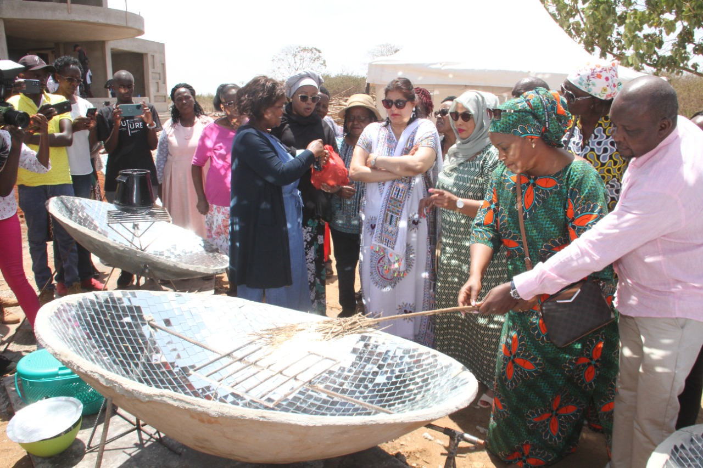
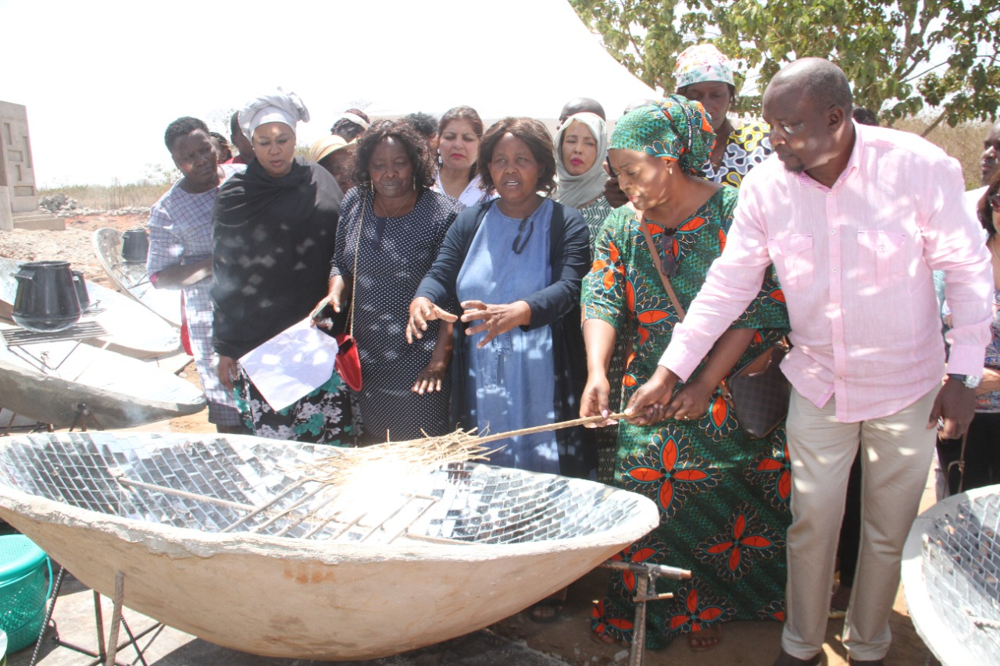

Blog


Harnessing the Sun: How the Jiko Solar Cooker Functions
Innovation in sustainable cooking methods has the potential to
transform the way we prepare meals, reduce our carbon footprint, and
improve the lives of countless people around the world. One such
innovation is the Jiko solar cooker, a parabolic solar cooker
designed to utilize the sun's energy to cook...
Read more

Shining a Light on Solar Cooking in Kenya: A Solution to Environmental and Health Challenges
Kenya, like many countries, faces significant challenges related
to deforestation, health hazards, and environmental degradation
due to the widespread use of fuelwood and charcoal for cooking...
Read more